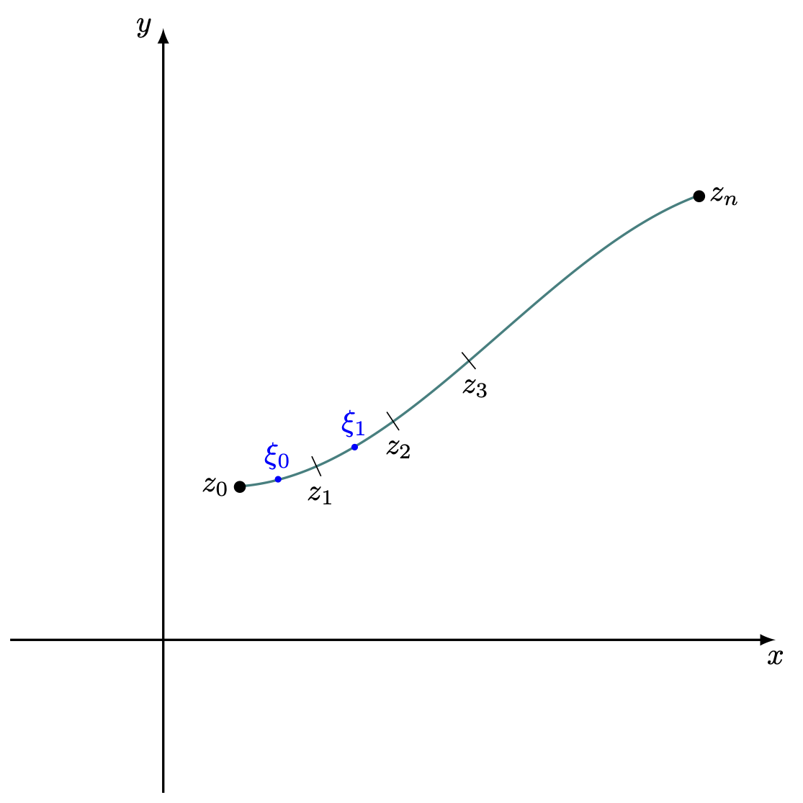
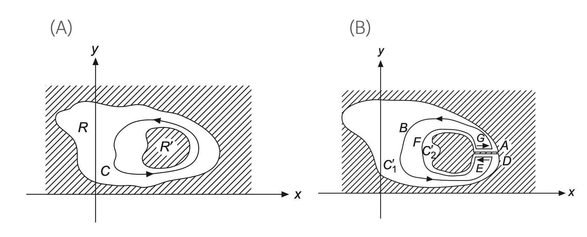
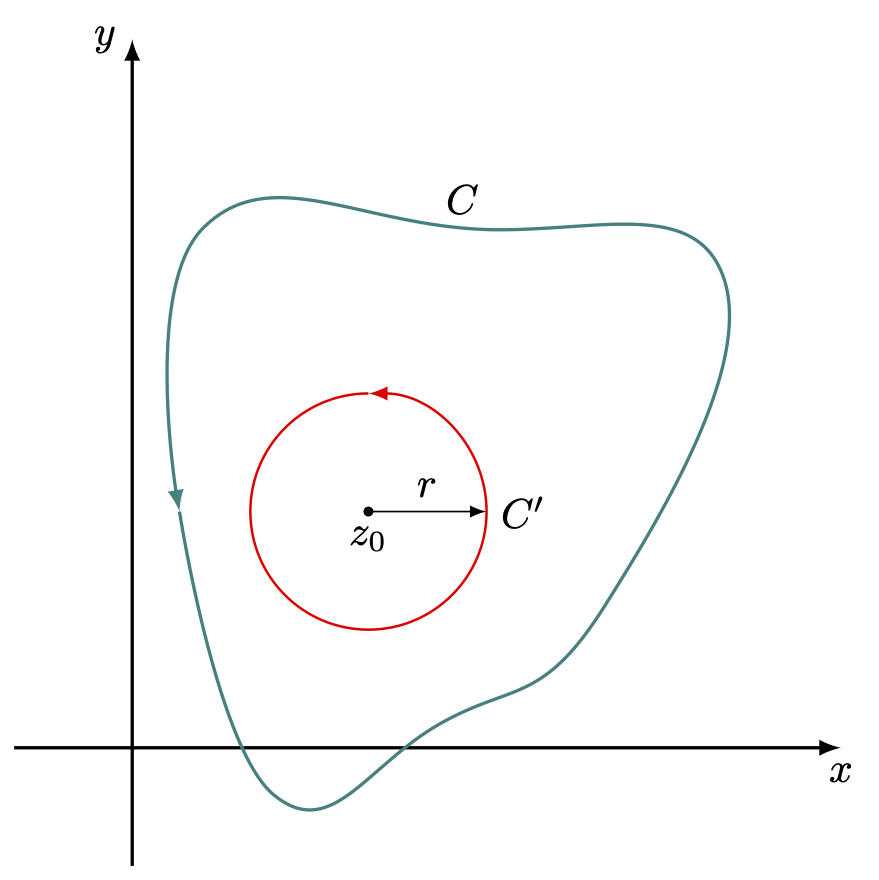
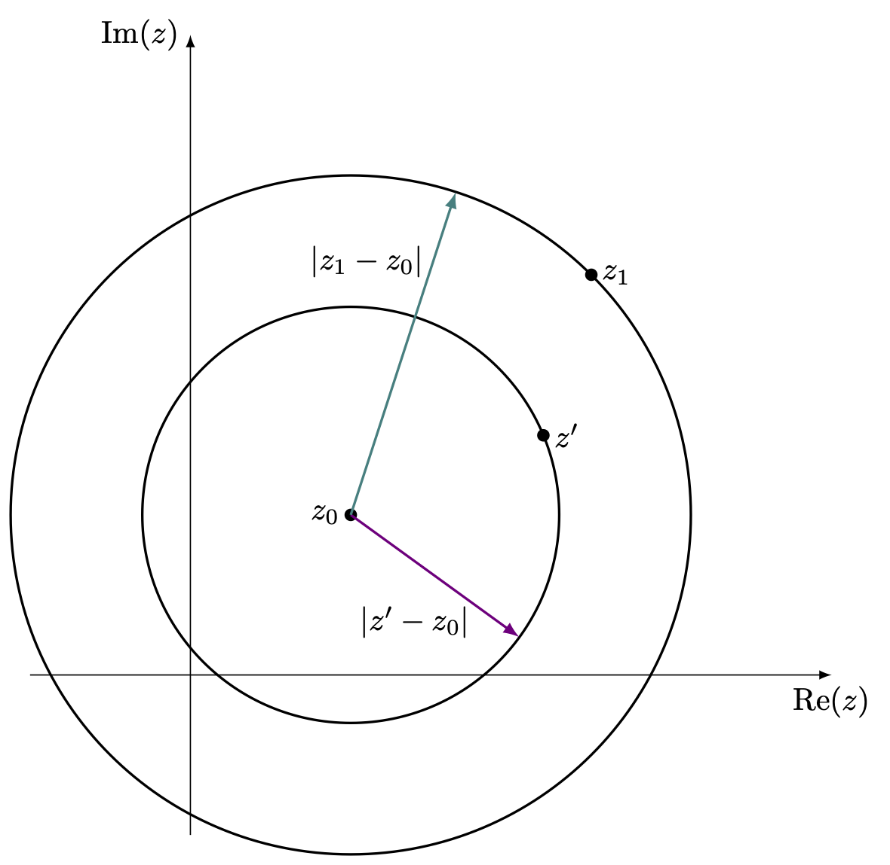
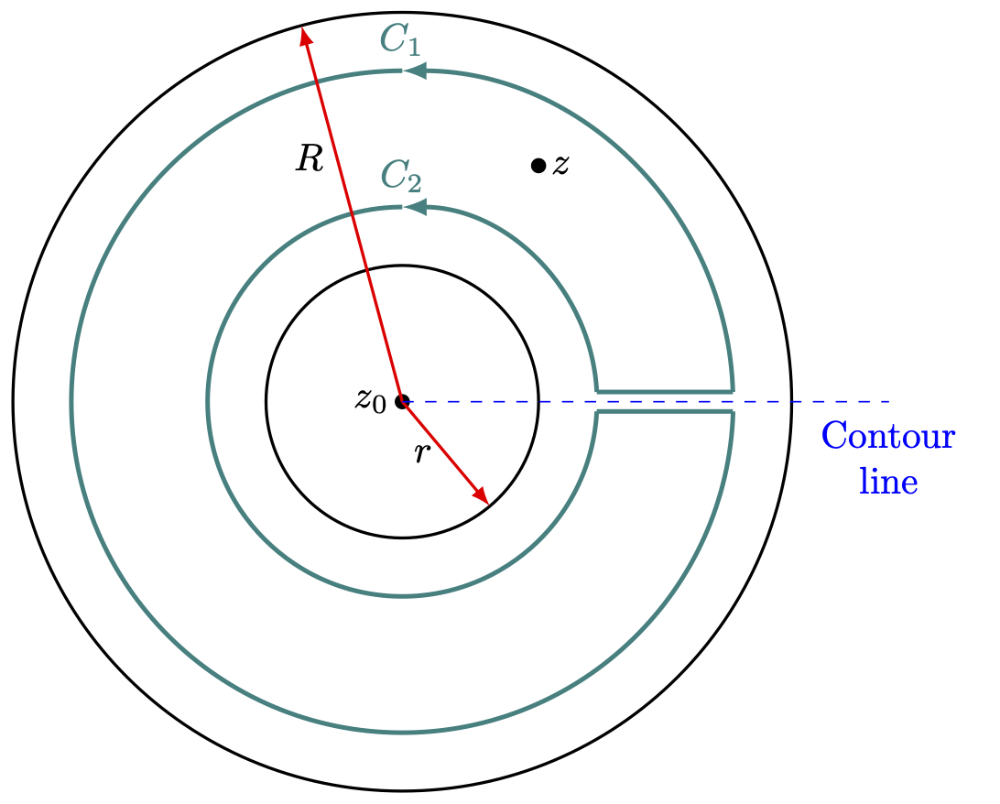

9 복소 함수의 기초
% %
%\[ \DeclarePairedDelimiters{\set}{\{}{\}} \DeclareMathOperator*{\argmax}{argmax} \]
9.1 복소변수와 복소함수
9.1.1 복소 함수
어떤 함수 \(f\) 가 실수에서 급수로 표현된다고 하자. \(f(x)= \sum_{j=0}^\infty c_j x^j\) 이고 \(x\) 의 수렴반경이 \(R\) 이라고 하면 \(|z|<R\) 인 복소수 \(z\) 에 대해 \(f(z)=\sum_{j=0}^\infty c_j z^j\) 라고 정의 할 수 있다. 예를 들어 \(\exp (x)\) 는 모든 \(x\in \mathbb{R}\) 에 대해 수렴하므로 모든 \(z\in \mathbb{C}\) 에 대해
\[ f(z) = 1+z+\dfrac{z^2}{2!} + \dfrac{z^3}{3!} + \cdots \]
라고 \(f:\mathbb{C} \to \mathbb{C}\) 를 정의 할 수 있다. \(f:\mathbb{C}\to \mathbb{C}\) 인 경우 함수의 실수부와 허수부를 다음과 같이 나눈다.
\[ f(z) = u(z) + iv(z) \qquad \text{or}\qquad f(x,\,y) = u(x,\,y) + i v(x,\,y) \]
이 때 \(u,\, v\) 는 \(\mathbb{C}\mapsto \mathbb{R}\) 함수이다.
9.1.2 복소수의 지수와 로그
\(z=x+iy\) 를 극좌표계에서 \(z=re^{i\theta}\) 로 표현하는 것은 1-1 대응을 이룬다. 정확히 말하면 1-1 대응을 이루도록 하기 위해 \(\theta\) 의 범위를 \([0,\, 2\pi)\) 로 제한한다. 정수 \(n\) 에 대해
\[ z^n = (x+iy)^n = r^n e^{in\theta} \]
이며 정해진 \(n\in \mathbb{Z}\) 에 대해 \(x+iy\) 와 \(r^n e^{i n \theta}\) 는 1-1 대응을 이룬다. 그러나 \(1/n\) 승의 경우는 그렇지 못한데 이는 양의 정수 \(n\) 과 \(n\) 보다 작은 음이 아닌 정수 \(k\) 에 대해
\[ 0\le \dfrac{\theta + 2k \pi}{n} < 2\pi, \qquad \left[e^{i(\theta + 2k\pi )/n} \right]^n = e^{i\theta} \]
가 성립하기 때문이다. 즉 \(z=i = e^{i\pi/2}\) 에 대해 \(e^{i\pi/4}\) 와 \(e^{5i\pi/4}\) 가 제곱했을 때 \(z=i\) 가 된다. 즉 복소수 \(z\) 와 정수 \(n\) 에 대해 \(z^{1/n}\) 은 \(n\) 개의 값을 가질 수 있다.
\(\ln (z)\) 역시 여러 값을 가진다. \(z=re^{i\theta}\) 와 정수 \(k\) 에 대해
\[ \ln (re^{i(\theta + 2k\pi)}) = \ln r +i (2k\pi +\theta) = \ln r + i\theta = \ln z \]
이므로 \(z\) 에 대한 로그함수 값은 무한개의 값을 가질 수 있다. 이렇게 어떤 함수가 여려개의 값을 가질 때 이를 다가 함수(multivalued function) 라고 한다. 다가함수는 엄밀한 의미에서의 함수는 아니지만 여기서는 이 용어를 사용하기로 한다.
9.2 코시-리만 조건 과 해석 함수
9.2.1 코시-리만 조건
\(z=x+iy\) 에 대해 \(x,\,y\) 의 변화량 \(\delta x,\, \delta y\) 를 생각 할 수 있다. 이 때
\[ \delta z = \delta x + i \delta y \]
이다. \(f=u+iv\) 일 때
\[ \delta f = \delta u + i \delta v \]
라고 쓰면
\[ \dfrac{\delta f}{\delta z} = \dfrac{\delta u + i\delta v}{\delta x + i \delta y} \tag{9.1}\]
식 9.1 을 두가지 경로에서 생각해보자. 우선 \(\delta y=0\) 인 경로에서 생각하면
\[ \lim_{\delta z \to 0} \dfrac{\delta f}{\delta z} = \lim_{\delta x\to 0} \left(\dfrac{\delta u}{\delta x} + i \dfrac{\delta v}{\delta x}\right) = \dfrac{\partial u}{\partial x} + i\dfrac{\partial v}{\partial x} \]
이며, \(\delta x = 0\) 인 경로에서 생각하면
\[ \lim_{\delta z \to 0} \dfrac{\delta f}{\delta z} = \lim_{\delta y\to 0} \left(-i\dfrac{\delta u}{\delta y} + \dfrac{\delta v}{\delta y}\right) = -i\dfrac{\partial u}{\partial y} + \dfrac{\partial v}{\partial y} \]
이다. \(f\) 가 \(z\) 에서 미분가능하다면
\[ \dfrac{\partial u}{\partial x} = \dfrac{\partial v}{\partial y},\qquad \dfrac{\partial v}{\partial x} = -\dfrac{\partial u}{\partial y} \tag{9.2}\]
이어야 한다. 식 9.2 의 조건을 코시-리만 조건 (Cauchy-Riemann condition) 이라고 하며 코시 리만 조건은 도함수가 존재하기 위한 필요조건이다.
이제 코시 리만 조건을 만족하면 도함수가 존재하며 여기에 각각의 편도함수가 \(z\) 에서 연속이라고 하자. 그렇다면 \(f(x,\,y)\) 에 대해
\[ \delta f = \left(\dfrac{\partial u}{\partial x} + i \dfrac{\partial v}{\partial x}\right)\delta x + \left(\dfrac{\partial u}{\partial y} + i \dfrac{\partial v}{\partial y}\right)\delta y \]
이며 여기에 코시-리만 조건을 적용하면
\[ \begin{aligned} \delta f &= \left(\dfrac{\partial u}{\partial x} + i \dfrac{\partial v}{\partial x}\right)\delta x + \left(- \dfrac{\partial v}{\partial x} + i \dfrac{\partial u}{\partial x}\right)\delta y \\ &= \left(\dfrac{\partial u}{\partial x} + i \dfrac{\partial v}{\partial x}\right)(\delta x +i\delta y) \end{aligned} \]
이므로
\[ \dfrac{d f}{d z} = \dfrac{\partial u}{\partial x} + i \dfrac{\partial v}{\partial x} = \dfrac{\partial v}{\partial y} - i\dfrac{\partial u}{\partial y} \tag{9.3}\]
이다. 식 9.3 은 \(\delta x\) 와 \(\delta y\) 의 상대적인 값에 무관하며 따라서 경로에 무관하다. 즉 \(f\) 에 대한 \(z\) 에서의 미분값이 존재한다.
9.2.2 해석 함수
실함수와 구별되는 복소함수의 가장 큰 특징을 나열하고자 한다. 여기에 대한 증명은 복소해석학의 다양한 교과서를 참고하라.
명제 9.1 복소평면의 열린 부분집합 \(U\subset C\) 에서 정의된 \(f:U \to \mathbb{C}\) 에 대해 다음은 동치이다.
(\(1\)) \(f\) 는 해석함수이다.
(\(2\)) 모든 \(z\in U\) 에서 \(f\) 는 무한번 미분 가능하다.
(\(3\)) 모든 \(z\in U\) 에서의 \(f\) 의 테일러 급수는 \(f(z)\) 로 수렴한다.
다가 함수의 경우 range 를 제한하여 단일값을 가지도록 하고 그 제한에서 해석 함수로 사용하기도 한다.
예제 9.1 \(f(z) = z^2\) 가 해석함수임을 보이자. \(z=x+iy\) 라고 하면 \(f(x,\,y) = (x^2-y^2)+2ixy\) 이며
\[ \dfrac{\partial u}{\partial x}=2x = \dfrac{\partial v}{\partial y},\qquad \dfrac{\partial u}{\partial y} = -2y = -\dfrac{\partial v}{\partial x} \]
이므로 코시-리만 조건을 만족한다. 또한 각 편미분이 연속이므로 \(f(z)=z^2\) 은 전해석 함수이다.
예제 9.2 \(f(z) = z^\ast = x-iy\) 에 대해
\[ \dfrac{\partial u}{\partial x} = 1 \ne \dfrac{\partial v}{\partial y} = -1 \]
이므로 \(f(z)\) 는 해석 함수가 아니다.
9.2.3 해석함수와 라플라스 방정식
\(f(x,\,y) = u(x,\,y) + iv(x,\,y)\) 가 \(Z\subset \mathbb{C}\) 에서 해석함수라면 코시 리만 조건으로부터
\[ \dfrac{\partial^2 u}{\partial x^2} + \dfrac{\partial^2 u}{\partial y^2}=\dfrac{\partial^2 v}{\partial x^2} + \dfrac{\partial^2 v}{\partial y^2} = 0 \]
을 만족한다. 우리는 \(n\) 차원 유클리드 공간에서 라플라스 방정식
\[ \nabla^2 f = \sum_{i=1}^n \dfrac{\partial^2 f}{\partial x_i^2} = 0 \tag{9.4}\]
을 만족하는 함수 \(f\) 를 조화 함수(harmonic function) 이라고 부른다(구면 조화 함수(spherical harmonic function) 과는 완전히 다른 종류이다). 즉 해석함수의 실수부와 허수부는 2차원 조화함수이다.
예제 9.3 \(u(x,\,y)=c\) 를 만족하는 곡선 \(C_u\)을 생각하자.
\[ 0 = du(x,\,y) = \dfrac{\partial u}{\partial x}dx + \dfrac{\partial u}{\partial y}dy \]
이므로 \((x_0,\,y_0) \in C_u\) 에서의 \(C_u\) 의 기울기는
\[ \left(\dfrac{dy}{dx}\right)_{u} = -\dfrac{\partial u/\partial x}{\partial u/\partial y} \]
이다. 이 \((x_0,\,y_0)\) 에 대해 \(v(x_0,\,y_0) = d\) 일 때 \(v(x,\,y)=d\) 를 만족하는 곡선 \(C_v\) 에 대해 \((x_0,\,y_0) \in C_v\) 에서의 기울기는
\[ \left(\dfrac{dy}{dx}\right)_v = -\dfrac{\partial v/\partial x}{\partial v/\partial y} = \dfrac{\partial u/\partial y}{\partial u/\partial x} = -\left[\left(\dfrac{dy}{dx}\right)_{u}\right]^{-1} \]
이다. 즉 \(x_0,\,y_0\) 에서의 \(u(x,\,y) = u(x_0,\,y_0)\) 와 \(v(x,\,y) = v(x_0,\,y_0)\) 의 두 곡선은 항상 직교한다.
9.2.4 해석함수의 미분
식 9.3 로부터
\[ f'(z) = \dfrac{df}{dz} = \dfrac{\partial f}{\partial x} \]
임을 안다. \(f(z) = z\) 일 때
\[ \dfrac{dz}{dz} = \dfrac{\partial (x+iy)}{\partial x} = 1 \]
임을 알 수 있다. 또한 두 복소함수의 곱의 미분을 계산 할 수 있다.
\[ \begin{aligned} \dfrac{d}{dz}[f(z)g(z)] = \dfrac{\partial}{\partial x}[f(z)g(z)] = (\partial_x f) g + f (\partial_x g)= f'(z)g(z) +f(z)g'(z) \end{aligned} \tag{9.5}\]
즉 실함수에서의 두 함수의 곱의 미분과 동일하다.
예제 9.4 식 9.5 를 이용하여 양의 정수 \(n\) 에 대해 \((z^n)' = nz^{n-1}\) 임을 보일 수 있다. Induction 을 사용한다. \(n=1\) 일 경우는 이미 보였다. \((z^n)'=nz^{n-1}\) 임을 가정하면
\[ (z^{n+1})' = (z z^n)' = z^n + z(nz^{n-1})= z^{n} + nz^{n} = (n+1)z^{n+1} \]
이다.
예제 9.5 \(\ln z = \ln r+i(\theta +2n\pi) = u+iv\) 라고 놓으면,
\[ \dfrac{\partial u}{\partial x} = \dfrac{x}{r^2}, \qquad \dfrac{\partial u}{\partial y} = \dfrac{y}{r^2},\qquad \dfrac{\partial v}{\partial x} = - \dfrac{y}{r^2}, \qquad \dfrac{\partial v}{\partial y} = \dfrac{x}{r^2} \]
이며 \(r=0\) 을 제외하고는 코시-리만 조건을 만족한다. 따라서
\[ \dfrac{d(\ln z)}{dz} = \dfrac{\partial \ln z}{\partial x} = \dfrac{x}{r^2} - i \dfrac{y}{r^2} = \dfrac{1}{x+iy} = \dfrac{1}{z} \tag{9.6}\]
이다. 주의해야 할 것은 \(\ln z\) 는 다가함수(multivalued function) 이므로 함수의 영역을 제한해야 해석함수가 된다. 여기에 대해서는 이후 다루기로 한다.
9.2.5 무한원점 (Point at infinity)
복소수를 다룰 때 무한대는 하나의 점으로 다루게 되며 이 점을 무한원점이라고 한다. 무한원점의 근방(neighborhood) 를 다룰 때는 \(w=1/z\) 로 변환시킨 후 \(w = 0\) 근방을 다룬다. 이렇게 되면 큰 양의 실수 \(R\) 에 대해 \(z=-R\) 을 다룰 때 \(w=1/z\) 근처의 미분을 다루게 되면 \(z=R\) 이 모두 \(w=1/z\) 근처에 있기 때문에 영향을 끼치게 된다. 이외의 특이한 사항에 대해서는 차후 다루기로 한다.
9.2.6 연습문제
연습문제 9.1 (Arfken 11.2.1) \(f(z) = \text{Re}(z)= x\) 가 해석함수인지 여부를 확인하라.
(해답). \[ \partial_x u = 1 \ne \partial_y v = 0 \]
이므로 해석함수가 아니다.
연습문제 9.2 (Arfken 11.2.2) 해석함수 \(w(z)\) 의 실수부 \(u(x,\,y)\) 와 허수부 \(v(x,\,y)\) 가 복소평면의 열린 부분집합 \(U\) 에서 라플라스 방정식을 만족한다고 하자. 그렇다면 \(u,\,v\) 모두 \(U\) 의 내부에서 최대값 혹은 최소값을 갖지 않는다는 것을 보여라.
(해답). \(u\) 와 \(v\) 에 대한 헤세 행렬(Hessian matrix) \(H_u=\begin{bmatrix} \partial_x^2 u & \partial_x\partial_y u\\ \partial_x\partial_y u & \partial_y^2 u\end{bmatrix}\), \(H_v=\begin{bmatrix} \partial_x^2 v & \partial_x\partial_y v\\ \partial_x\partial_y v & \partial_y^2 v\end{bmatrix}\) 를 생각하자. \(\det(H_u) < 0\), \(\det(H_v) \le 0\) 이면 \(u,\,v\) 모두 영역에서 극값을 가지 않는다. 코시-리만 조건과 라플라스 방정식을 이용하면 다음을 보일 수 있다.
\[ \begin{aligned} \det(H_u) = (\partial_x^2u) (\partial_y^2 u)- (\partial_x \partial_y u )^2 &= - (\partial_x^2 u)^2 - (\partial_x^2 v)^2 \le 0 \end{aligned} \]
이며 \(\det(H_v) \le 0\) 도 같은 방법으로 보일 수 있다.
연습문제 9.3 (Arfken 11.2.4) \(w_1 = u(x,\,y) + i v(x,\,y)\), \(w_2= w_1^\ast = u(x,\,y) - iv(x,\,y)\) 가 공통으로 해석함수가 되는 영역을 가진다면 \(u(x,\,y)\) 와 \(v(x,\,y)\) 는 상수임을 보여라.
(해답). \(w_1\) 의 코시-리만 조건으로부터 \(\partial_x u = - \partial_y v\) 이며 \(w_1^\ast\) 의 코시 리만 조건으로 부터 \(\partial_x u = \partial_yv\) 이므로 \(\partial_x u = 0\) 이다. 즉 \(u=u(x)\) 이다. \(w_1\) 의 코시-리만 조건으로부터 \(\partial_x v = -\partial_y u\) 이며 \(w_1^\ast\) 의 코시-리만 조건으로부터 \(\partial_x v = \partial_y u\) 이므로 \(\partial_y u=0\) 이다. 즉 \(u\) 는 상수이다. 마찬가지로 \(v\) 가 상수 임을 보일 수 있다.
연습문제 9.4 (Arfken 11.2.5) \(f(z) = 1/(x+iy)\) 에 대해 \(1/z\) 가 \(z=0\) 을 제외하고는 전해석 함수 임을 보여라. 이를 이용하여 \(n\in \mathbb{Z}_+\) 에 대해 \(z^{-n}\) 가 \(z=0\) 을 제외한 영역에서의 해석함수 여부까지 확장하라.
(해답). \(f(z) = \dfrac{x}{x^2+y^2} - i \dfrac{y}{x^2+y^2}\) 이며,
\[ \dfrac{\partial u}{\partial x} = \dfrac{-x^2+y^2}{(x^2+y^2)^2},\, \dfrac{\partial u}{\partial y} = -\dfrac{2xy}{(x^2+y^2)^2},\, \dfrac{\partial v}{\partial x} = \dfrac{2xy}{(x^2+y^2)^2},\, \dfrac{\partial v}{\partial y} = \dfrac{-x^2+y^2}{(x^2+y^2)^2} \]
이므로 \(z=0\) 을 제외한 영역에서 코시-리만 조건을 만족하며, 모든 편도함수가 연속임을 알 수 있다. \(f'=\partial_xu + i \partial_y u\) 므로
\[ \dfrac{d}{dz}\left(\dfrac{1}{z}\right) = \dfrac{-x^2+y^2 + i2xy}{(x^2+y^2)^2}= - \dfrac{(x-iy)^2}{(x^2+y^2)} = - \dfrac{1}{z^2} \]
이다. 즉 \((z^{-1})' = -1/z^2\) 임을 알 수 있다. 이제 양의 정수 \(n\) 에 대해 \((z^{-n})' = -nz^{-(n+1)}\) 임을 induction 을 이용하여 보이자. \(n=1\) 일 때 성립하며
\[ (z^{-(n+1)})' = \dfrac{d}{dz}\left(\dfrac{1}{z} z^{-n}\right) = - \dfrac{1}{z^2} z^{{-n}} - \dfrac{1}{z}nz^{-(n+1)}= -(n+1) z^{-(n+2)} \]
이다.
이제 \(f(z) = z^{-n}\) 함수의 해석 함수 여부를 따져 보자.
\[ f(z) = \dfrac{1}{(x+iy)^n} = \dfrac{(x-iy)^n}{(x^2+y^2)^n} \]
이며 \(n=1\) 일 때와 마찬가지로 \(z\ne 0\) 에서 해석함수 임을 보일 수 있다.
연습문제 9.5 (Arfken 11.2.7) \(f(re^{i\theta})= R(r,\,\theta) e^{i\Theta(r,\,\theta)}\) 를 생각한다. 여기서 \(R(r,\,\theta),\,\Theta(r,\,\theta)\) 미분 가능한 실함수이다. 이 때 극좌표계에서의 코시 리만 조건은 다음과 같음을 보여라.
\[ \dfrac{\partial R}{\partial r}= \dfrac{R}{r} \dfrac{\partial \Theta}{\partial \theta},\qquad \dfrac{1}{r} \dfrac{\partial R}{\partial \theta} = - R\dfrac{\partial \Theta}{\partial r} \tag{9.7}\]
(해답). \[ \begin{aligned} \dfrac{\partial u}{\partial r} &= \dfrac{\partial u}{\partial x}\dfrac{\partial x}{\partial r} + \dfrac{\partial u}{\partial y}\dfrac{\partial y}{\partial r} = \cos \theta \dfrac{\partial u}{\partial x} + \sin \theta \dfrac{\partial u}{\partial y}, \\ \dfrac{\partial v}{\partial \theta} &= \dfrac{\partial v}{\partial x}\dfrac{\partial x}{\partial \theta} + \dfrac{\partial v}{\partial y}\dfrac{\partial y}{\partial \theta} = -r \sin \theta \dfrac{\partial v}{\partial x} + r \cos \theta \dfrac{\partial v}{\partial y} \\ &= r\sin \theta \dfrac{\partial u}{\partial y } + r\cos\theta \dfrac{\partial u}{\partial x} = r \dfrac{\partial u}{\partial r}, \\ \dfrac{\partial v}{\partial r} &= \dfrac{\partial v}{\partial x}\dfrac{\partial x}{\partial r} + \dfrac{\partial v}{\partial y}\dfrac{\partial y}{\partial r} = \cos \theta \dfrac{\partial v}{\partial x} + \sin \theta \dfrac{\partial v}{\partial y} \\ \dfrac{\partial u}{\partial \theta} &= \dfrac{\partial u}{\partial x}\dfrac{\partial x}{\partial \theta} + \dfrac{\partial u}{\partial y}\dfrac{\partial y}{\partial \theta} = -r \sin \theta \dfrac{\partial u}{\partial x} + r \cos \theta \dfrac{\partial u}{\partial y} \\ &= -r\sin \theta \dfrac{\partial v}{\partial y } - r\cos\theta \dfrac{\partial v}{\partial y} = -r \dfrac{\partial v}{\partial r}, \\ \end{aligned} \]
즉,
\[ \dfrac{\partial u}{\partial r} = \dfrac{1}{r}\dfrac{\partial v}{\partial \theta},\qquad \dfrac{\partial v}{\partial r} = - \dfrac{1}{r} \dfrac{\partial u}{\partial \theta} \]
이다. \(u=R\cos \Theta,\, v = R \sin \Theta\) 이므로,
\[ \begin{aligned} \dfrac{\partial R}{\partial r} \cos \Theta - R \sin \Theta \dfrac{\partial \Theta}{\partial r} &= \dfrac{1}{r} \dfrac{\partial R}{\partial \theta} \sin \Theta + \dfrac{R}{r} \cos \Theta \dfrac{\partial\Theta}{\partial \theta}, \\ \dfrac{\partial R}{\partial r} \sin \Theta + R \cos \Theta \dfrac{\partial \Theta}{\partial r} &= -\dfrac{1}{r} \dfrac{\partial R}{\partial \theta} \cos \Theta + \dfrac{R}{r} \sin \Theta \dfrac{\partial\Theta}{\partial \theta}. \end{aligned} \]
이다. 이로부터,
\[ \dfrac{\partial R}{\partial r} = \dfrac{R}{r}\dfrac{\partial \Theta}{\partial \theta},\qquad \dfrac{1}{r}\dfrac{\partial R}{\partial \theta} = - R \dfrac{\partial \Theta}{\partial r} \]
을 얻는다.
연습문제 9.6 (Arfken 11.2.8) 연습문제 9.5 의 \(\Theta (r,\,\theta)\) 는 극좌표계에서의 라플라스 방정식
\[ \dfrac{\partial^2 \Theta}{\partial r^2} + \dfrac{1}{r} \dfrac{\partial \Theta}{\partial r} + \dfrac{1}{r^2} \dfrac{\partial^2 \Theta}{\partial \theta^2} = 0 \]
을 만족함을 보여라.
(해답). \[ \begin{aligned} \dfrac{\partial^2 \Theta}{\partial r^2} &= \dfrac{\partial}{\partial r}\left(- \dfrac{1}{rR} \dfrac{\partial R}{\partial \theta}\right) = \dfrac{1}{r^2R}\dfrac{\partial R}{\partial\theta} + \dfrac{1}{rR^2}\dfrac{\partial R}{\partial r} \dfrac{\partial R}{\partial \theta} - \dfrac{1}{rR}\dfrac{\partial^2 R}{\partial r \partial \theta} \\ &= - \dfrac{1}{r} \dfrac{\partial \Theta}{\partial r} - \dfrac{1}{r} \dfrac{\partial \Theta}{\partial \theta}\dfrac{\partial \Theta}{\partial r} - \dfrac{1}{rR}\dfrac{\partial^2 R}{\partial r \partial \theta} \end{aligned} \]
이며 여기서
\[ \begin{aligned} \dfrac{\partial^2 R}{\partial r \partial \theta} &= \dfrac{\partial}{\partial \theta}\left(\dfrac{R}{r} \dfrac{\partial \Theta}{\partial \theta}\right) = \dfrac{1}{r} \dfrac{\partial R}{\partial \theta}\dfrac{\partial \Theta}{\partial \theta} + \dfrac{R}{r} \dfrac{\partial^2 \Theta}{\partial \theta^2} \\ &= -R \dfrac{\partial \Theta}{\partial r} \dfrac{\partial \Theta}{\partial \theta} + \dfrac{R}{r}\dfrac{\partial^2 \Theta}{\partial^2 \theta} \end{aligned} \]
이므로,
\[ \dfrac{\partial^2 \Theta}{\partial r^2} = - \dfrac{1}{r}\dfrac{\partial \Theta}{\partial r} -\dfrac{1}{r}\dfrac{\partial \Theta}{\partial \theta} \dfrac{\partial \Theta}{\partial r} + \dfrac{1}{r}\dfrac{\partial \Theta}{\partial \theta} \dfrac{\partial \Theta}{\partial r}- \dfrac{1}{r^2} \dfrac{\partial^2 \Theta}{\partial \theta^2} = - \dfrac{1}{r}\dfrac{\partial \Theta}{\partial r} - \dfrac{1}{r^2} \dfrac{\partial^2 \Theta}{\partial \theta^2} \]
이다. 주어진 식을 만족한다.
9.3 코시의 적분 정리
9.3.1 Contour 적분
복소평면에서 특정 경로에 대해 적분할 때 이 경로를 contour 라고 한다. 보통 countour 는 \(C\) 로 표기한다. 경로의 시작점과 끝점을 각각 \(z_0,\,z_n\) 이라고 하고 경로 중간에 점 \(z_1,\ldots,\,z_{n-1}\) 을 위치시켰다고 하자(그림 9.1). 이 때 \(z_{j}\) 와 \(z_{j+1}\) 사이의 어떤 점을 선택하여 \(\xi_j\) 라고 하고 다음의 합을 생각한다.
\[ S_n = \sum_{j=0}^{n-1} f(\xi_j) (z_{j+1}-z_j). \tag{9.8}\]
이 때 \(n\to \infty\) 극한에서 \(|z_{j+1}-z_j|\to 0\) 이며 \(S_n \to \int_C f(z)\,dz\) 가 된다.

혹은 \(z_0 = x_0+iy_0,\, z_n = x_n +iy_n\) 에 대해
\[ \begin{aligned} \int_{z_0}^{z_n} f(z)\,dz &= \int_{(x_0,\,y_0)}^{(x_n,\,y_n)} \left[u(x,\,y)+iv(x,\,y)\right] \, (dx+idy) \\ &= \int_{(x_0,\,y_0)}^{(x_n,\,y_n)} [u(x,\,y)\,dx - v(x,\,y)\, dy] + i \int_{(x_0,\,y_0)}^{(x_n,\,y_n)} [u(x,\,y)\,dy + v(x,\,y)\, dx] \end{aligned} \]
라고 볼 수도 있다. 위의 식은 복소 경로에서의 복소함수의 적분을 2차원 유클리드 공간에서의 실함수의 적분으로 바꾼다.
많은 경우 우리는 경로가 닫혀 있는, 즉 \(z_0=z_n\) 인 contour 에 대해 다룬다.
9.3.2 코시 적분 정리
코시 정리는 단순연결영역(simply connected region) 이라는 특별한 성질을 가진 복소평면 \(\mathbb{C}\) 의 부분집합 위에서 성립한다. 일단 영역(region) 은 공집합이 아니며(non-empty), 연결되어 있는 위상공간의 열린 집합을 의미한다\(^1\). 영역 \(U \subset C\) 의 내부에 구명이 없다면, 즉 \(U\) 에서 정의된 임의의 닫힌 곡선 \(C'\) 에 대해 \(C'\) 의 내부가 모두 \(U\) 에 포함된다며 \(U\) 는 단순연결영역이다. 뒤에 보겠지만 이는 스토크스 정리(Stokes’ theorem) 이 성립하는 영역과 같은데 코시 정리의 증명에 스토크스 정리가 사용되기 때문이다.
정리 9.1 (코시 적분 정리) \(C\) 가 복소평면에서의 닫힌 경로이며 \(f\) 가 \(C\) 를 포함하는 어떤 단순 연결 영역에서 해석 함수 일 때 다음이 성립한다.
\[ \oint_C f(z)\, dz = 0 \tag{9.9}\]
(증명). \(z=x+iy\) 에 대해 \(f(z) = u(x,\,y) +i v(x,\,y)\) 라고 하자. \(dz=dx+idy\) 이므로
\[ \oint_C f(z)\, dz = \oint_C (u+iv)(dx+idy) = \oint_C (u\,dx -v \,dy) +i \oint_C (u\,dy+v\,dx) \]
이다. 닫힌 경로 \(C\) 에 의해 구별되는 면적을 \(A\) 라고 하자. 스토크스 정리와 코시-리만 조건에 의해
\[ \begin{aligned} \oint_C (u \,dx -v dy) &= -\int \left(\dfrac{\partial u}{\partial y} + \dfrac{\partial v}{\partial x} \right)\, dx\,dy = 0, \\ \oint_C (u\,dy + v\,dx) &= \int \left(\dfrac{\partial u}{\partial x} - \dfrac{\partial v}{\partial y} \right)\, dx\,dy = 0, \end{aligned} \]
이다. \(\square\)
예제 9.6 \(\oint z^n\, dz\) 를 원점을 중심으로 반지름 \(r\) 인 원을 contour 로 잡아 계산해보자. 경로는 반시계방향으로 한다. \(z=re^{i\theta}\) 라고 하면 \(dz = ire^{i\theta}d\theta\) 이며,
\[ \oint_C z^n\,, dz = i\int_0^{2\pi} r^{n+1}e^{i(n+1)\theta}\, d\theta \]
이다. \(n\ne -1\) 인 경우
\[ \oint_C z^n\, dz = \dfrac{r^{n+1}}{n+1}\left[e^{i(n+1)}\right]_0^{2\pi} = 0 \]
이며, \(n=-1\) 인 경우
\[ \oint_C z^{-1}\,dz = i\int_0^{2\pi} 1\, d\theta = 2\pi i \]
이다. \(n\ge 0\) 인 경우 \(z^n\) 은 유한한 \(z\) 에 대해 해석 함수이므로 코시-정리에 따라 적분이 \(0\) 이 되는 것이 당연하다. \(n<0\) 인 경우 \(z=0\) 에서 특이점이며 따라서 원점을 포함하는 영역에서는 코시 정리를 사용 할 수 없다.
9.3.3 다중 연결 영역
단일 연결 영역이 아닌 영역을 다중 연결 영역(multiply connected region) 이라고 한다. 그림 9.2 의 (A) 는 단순연결영역이 아니므로 다중연결영역이다.

함수 \(f\) 가 하얀 부분(\(R\)) 에서 해석함수라고 하자. 코시 정리는 contour \(C\) 에 대한 적분에 사용 될 수 없다. 그러나 그림 (B) 의 \(C'\) 과 같이 경로를 잡는다면 코시 적분을 수행할 수 있다. (B) 에서와 같이 \(R\) 내부에 얇은 틈을 만들어 \(R'\) 을 외부의 영역과 연결한다. 그렇다면 새로운 영역에 어떤 폐곡선을 그리더라도 폐곡선의 내부에 영역이 아닌 점을 포함하지 않는다. 즉 틈을 통해 단순연결영역이 된다. 그리고 \(ABDEFGA\) 를 연결하는 새로운 경로 \(C'\) 을 생각하자. 이 경로는 단순 연결 영역 내의 경로이므로 코시 정리가 성립한다. 또한 \(f(z)\) 가 원래의 영역에서 연속이기 때문에 \(C'\) 의 부분경로 \(AG\) 와 \(DE\) 에 대한 적분은 서로 상쇄한다는 것을 알 수 있다. 즉
\[ \int_G^A f(z)\,dz = -\int_D^E f(z)\, dz \]
이다. 그렇다면 코시 정리에 따라
\[ \oint_{C'} f(z)\, dz = \int_{ABD}\, f(z)\, dz + \int_{EFG} \, f(z)\, dz = 0 \]
이다. \(\int_{GE} f(z) \, dz =0\). \(\int_{AD} f(z)\, dz = 0\) 이므로 다중연결영역에서 같은 방향으로의 두 경로에 대한 적분은 항상 같다는 것을 의미한다. 즉 \(C'_1 = ABDA\), \(C'_2 = GFEG\) 경로로 잡으면
\[ \oint_{C'_1}f(z)\, dz = \oint_{C'_2} f(z)\, dz \]
이다.
이제 예제 9.6 을 다시 한번 보자. 그렇다면 우리는 다음을 알 수 있다.
명제 9.2 \(z_0\) 를 내부에 포함하는 반시계방향의 닫힌 경로 \(C\) 에 대해 다음이 성립한다.
\[ \oint_{C} (z-z_0)^n \, dz = \left\{ \begin{array}{ll} 0, & n \ne -1,\\ 2\pi i, \qquad & n = -1. \end{array}\right. \]
9.3.4 연습 문제
연습문제 9.7 (Arfken 11.3.2) Contour \(C\) 의 길이가 \(L\) 이며 함수 \(M = \max \{|f(z)| : z\in C\}\) 일 때 다음을 보여라.
\[ \left| \int_C f(z)\, dz \right| \le M\cdot L \]
(해답). 식 9.8 의 개념을 그대로 사용하자. 또한 우리는 \(|\sum a_n| \le \sum |a_n|\) 임을 안다.
\[ \begin{aligned} \left|\int_C f(z) \, dz\right| &= \lim_{n\to \infty} \left|\sum_{j=0}^{n-1} f(\xi_j) (x_{j+1}-x_j) \right| \\ &\le \lim_{n \to \infty} \sum_{j=0}^{n-1} |f(\xi_j)| | x_{j+1}-x_j| \\ &\le \lim_{n \to \infty} \sum_{j=0}^{n-1} M |x_{j+1}-x_j| \\ &\le M \left(\lim_{n \to \infty}\sum_{j=0}^{n-1}|x_{j+1}-x_j|\right) = ML \end{aligned} \]
연습문제 9.8 (Arfken 11.3.4) \(F(z) = \displaystyle \int_{\pi (1+i)}^z \cos 2\zeta \, d\zeta\) 에 대해 \(F(z)\) 가 적분 경로에 무관하게 그 값이 정해진다는 것을 보이고 \(F(\pi i)\) 값을 구하라.
(해답). \(\cos 2\zeta = \displaystyle \sum_{j=0}^\infty \dfrac{(-1)^j(2\zeta)^{2j}}{(2j)!}\) 는 해석 함수이므로 적분경로에 무관하게 \(F(z)\) 값이 정해진다. 경로를 \(\zeta = \pi (t+i)\), \(t:1 \to 0\) 으로 잡으면, \(d\zeta=\pi dt\) 이며
\[ \begin{aligned} F(\pi i) &= \int_{\pi(1+i)}^{i \pi} \dfrac{e^{2i\zeta} + e^{-2i\zeta}}{2} \, d\zeta = \int_{1}^0 \pi\dfrac{e^{2i\pi(t+i)} + e^{-2i\pi (t+i)}}{2}\, dt \\ &= \dfrac{\pi}{2} \left[\dfrac{e^{-2\pi} e^{2i\pi t}}{2i \pi }\right]_{1}^0 -\dfrac{\pi}{2} \left[\dfrac{e^{2\pi} e^{-2i\pi t}}{2i \pi }\right]_{1}^0 = 0. \end{aligned} \]
9.4 코시 적분 공식
정리 9.2 (코시 적분 공식) \(z_0\) 가 복소평면상의 반시계 방향의 닫힌 contour \(C\) 의 내부에 위치하며 \(f(z)\) 가 \(C\) 를 포함하는 영역에서 해석적이면 다음이 성립한다.
\[ \dfrac{1}{2\pi i} \oint_C \dfrac{f(z)}{z-z_0} \, dz = f(z_0) \tag{9.10}\]
(증명). \(z_0\) 가 \(C\) 의 내부에 있으므로 각각의 \(z\in C\) 에 대해 \(z\ne z_0\) 이며 따라서 위의 적분은 잘 정의된다. \(f(z)\) 가 해석적이라도 \(z-z_0\) 로 인해 \(f(z)/(z-z_0)\) 는 \(z=z_0\) 에서 해석적이 아니다. 아래 그림 9.3 와 같이 \(C\) 내부에 \(z_0\) 주위의 반경 \(r\) 의 반시계방향으로 회전하는 원형 경로 \(C'\) 을 생각하자.

우리느 \(C\) 경로로의 적분과 \(C'\) 경로로의 적분값이 같다는 것을 안다. \(C'\) 경로에 대해 적분하고자 한다. \(z=z_0 +re^{i\theta}\) 이며 \(dz=ire^{i\theta}\,d\theta\) 이므로
\[ \oint_{C'} \dfrac{f(z)}{z-z_0}\,dz = \int_{0}^{2\pi} \dfrac{f(re^{i\theta})}{re^{i\theta}} ire^{i\theta}\,d\theta = i\int_0^{2\pi} f(re^{i\theta})\, d\theta \]
이다. \(r\to \infty\) 극한에 대해서도 성립해야 하므로
\[ \oint_{C'} \dfrac{f(z)}{z-z_0}\,dz = 2\pi i f(z_0) \]
이다. \(\square\)
정리 9.2 의 조건에서 \(z_0\) 가 contour 외부에 위치한다면 어떨까? \(f(z)/(z-z_0)\) 는 \(C\) 내부에서 해석적이며 따라서 적분은 \(0\) 이 된다.
예제 9.7 단위원의 경로 \(C\) 에 대해 \(1/z(z+2)\) 를 적분한 값을 \(I\) 라고 하자.
\[ \dfrac{1}{z(z+1)}=\dfrac{1}{2} \left(\dfrac{1}{z} - \dfrac{1}{z+2}\right) \]
이며 \(C\) 안에 포함된 \(1/z(z+1)\) 의 특이점은 \(z=0\) 뿐이다. 따라서,
\[ I = \oint_C \dfrac{1}{z(z+1)}\, dz = \dfrac{1}{2}\oint_C \dfrac{1}{z}\,dz - \dfrac{1}{2}\oint_C \dfrac{1}{z+2}\, dz = \dfrac{1}{2}(2\pi i) = \pi i \]
이다.
9.5 미분
식 9.10 을 \(z_0\) 에 대해 미분하면
\[ f'(z_0) = \dfrac{1}{2\pi i} \oint \dfrac{f(z)}{(z-z_0)^2}\, dz \tag{9.11}\]
를 얻는다. 이를 반복하면 다음을 얻는다.
\[ f^{(n)}(z_0) = \dfrac{n!}{2\pi i} \oint \dfrac{f(z)}{(z-z_0)^{n+1}}\, dz. \tag{9.12}\]
예제 9.8 \(z=a\) 를 포함하는 경로 \(C\) 에 대해 다음의 적분을 생각하자
\[ I = \oint_C \dfrac{\sin^2 z}{(z-a)^4}\, dz. \]
식 9.12 를 생각하면 다음과 같이 계산 할 수 있다.
\[ I = \dfrac{2\pi i}{3!} \left[\dfrac{d^3}{dz^3} \sin z^2\right]_{z=a} = - \dfrac{8\pi i}{3} \sin a. \cos a \]
9.5.1 모레라의 정리
정리 9.3 (모레라의 정리) \(f(z)\) 가 단순 연결 영역 \(R\) 에서 연속이며 \(R\) 에서의 모든 닫힌 contour \(C\) 에서 \(\oint_C f(z)\,dz=0\) 이면 \(f(z)\) 는 \(R\) 에서 해석적이다.
(증명). \(z_0 \in R\) 을 하나 선택하자. 조건에 의해 \(F:R \to \mathbb{C}\) 인 \(F(z)\) 를 다음과 같이 정의 할 수 있다.
\[ F(z) := \int_{z_0}^z f(z)\,dz \tag{9.13}\]
임의의 \(z_1,\,z_2\in R\) 에 대해
\[ F(z_2)-F(z_1) = \int_{z_1}^{z_2} f(z)\, dz \tag{9.14}\]
이다. 그렇다면 복소 변수 \(t\) 에 대한 적분으로 다음과 같이 쓸 수 있다.
\[ \dfrac{F(z_2)-F(z_1)}{z_2-z_1} - f(z_1) = \dfrac{1}{z_2-z_1} \int_{z_1}^{z_2} {\large [ }f(t) - f(z_1){\large ]}\, dt \tag{9.15}\]
\(f\) 가 연속이므로 \(\varepsilon > 0\) 에 대해 어떤 \(\delta>0\) 이 존재하여
\[ |z_2-z_1|<\delta \implies |f(z_2)-f(z_1)|<\varepsilon \]
이 성립한다. \(z_2 \to z_1\) 극한을 생각하면 \(|t-z_2|<|z_2-z_1| <\delta\) 이며
\[ \begin{aligned} \left| \dfrac{F(z_2)-F(z_1)}{z_2-z_1} - f(z_1)\right| &= \left|\dfrac{1}{z_2-z_1} \int_{z_1}^{z_2} {\large [ }f(t) - f(z_1){\large ]}\, dt\right| \\ &\le \dfrac{1}{|z_2-z_1|} \int_{z_1}^{z_2} \left| f(t)-f(z_1) \right| |dt|, \\ &\le \dfrac{1}{|z_2-z_1|} \int_{z_1}^{z_2} \varepsilon \, |dt| = \varepsilon \end{aligned} \]
이므로
\[ f(z_1) = F'(z_1) \tag{9.16}\]
이다. 즉 \(F\) 가 \(R\) 에서 해석적이므로 \(F'(z) = f(z)\) 역시 \(R\) 에서 해석적이다. \(\square\)
모레라의 정리는 다중 연결 영역까지 확장되지 않는다는 것에 유의해야 한다. 단순 연결 영역이 아닐 경우 식 9.14 가 경로에 무관하게 정의된다는 보장이 없기 때문이다. 종합적으로 보면 다중 연결 영역에서 해석적인 함수는 모든 \(n\)-계 도함수가 존재하지만 그 적분이 경로-독립적으로 존재한다는 보장이 없다. 이 문제는 이후 다시 다루기로 한다.
어쨌든 모레라의 정리는 우리에게 복소함수에 대한 부정적분을 생각할 수 있도록 해 준다. 즉 함수 \(f(z)\) 에 대한 경로-독립적인 적분을 생각 할 수 있다면 이 적분 함수의 미분이 \(f(z)\) 라는 것이다.
9.5.2 코시부등식과 리우빌 정리
명제 9.3 (코시 부등식) \(f(z) = \sum a_n z^n\) 이 해석적이며 반경 \(r\) 인 원에서 \(|f(z)|\le M\) 이면
\[ |a_n|r^n \le M \]
이 성립한다.
(증명). 코시 적분 공식을 이용하면
\[ a_n = \dfrac{1}{2\pi} \oint_{|z|=r} \dfrac{f(z)}{z^{n+1}}\, dz \tag{9.17}\]
이며 따라서
\[ |a_n| = \dfrac{1}{2\pi} \left|\oint_{|z|=r} \dfrac{f(z)}{z^{n+1}}\, dz\right| \le \dfrac{1}{2\pi} \oint_{|z|=r} \left|\dfrac{f(z)}{z^{n+1}} \right|\, |dz| \le \dfrac{1}{2\pi} \dfrac{M}{r^{n+1}}2\pi r= \dfrac{M}{r^{n+1}} \]
이다. 즉 식 9.17 이 성립한다. \(\square\)
우리는 이로부터 아주 중요한 결과를 얻을 수 있다.
정리 9.4 (리우빌 정리) \(f(z)\) 가 유계이며 전해석함수이면 \(f(z)\) 는 상수함수이다.
(증명). \(f(z)\) 가 유계, 즉 \(z\in \mathbb{C}\) 에 대해 \(|f(z)|\le M\) 인 \(M>0\) 이 존재한다 하자. \(n\ge 1\) 이고 아주 큰 \(r\) 에 대해 \(|a_n| \le Mr^{-n}\) 이어야 하므로 \(a_n=0\) 이다. 즉 \(f(z) = a_0\) 인 상수함수이다. \(\square\)
정리 9.4 로부터 \(f(z)\) 가 상수함수가 아니라면 \(f(z)\) 가 유계가 아니거나 전해석 함수가 아니어야 한다. 우리는 이로부터 놀라운 증명을 할 수 있다.
정리 9.5 (대수학의 기본정리) \(n\) 차 다항식 \(p_n(z)= \sum_{k=0}^n a_k z^k\) 는 \(n\) 개의 근을 갖는다.
(해답). \(n\) 차 다항식이므로 \(a_n \ne 0\) 이다. \(p_n(z)\) 의 근이 없다고 하자. \(1/p_n(z)\) 는 유계인 전해석함수이며 따라서 리우빌의 정리에 따라 상수함수인데 이는 가정에 모순된다. 따라서 \(p_n(z)\) 는 근을 가지며 이를 \(z_1\) 이라고 하자. \(p_{n-1}(z) = p_n(z)/(z-1)\) 역시 다항식이며 앞의 논리를 그대로 사용 할 수 있다. 이를 \(n\) 번 계속 할 수 있으며 이는 \(p_n(z)\) 가 \(n\) 개의 해를 갖는다는 의미이다. \(\square\)
9.5.3 연습문제
명시적으로 달리 언급하지 않는다면 여기서의 닫힌 contour 는 반시계방향의 경로이다.
연습문제 9.9 (Arfken 11.4.1) 크로네커 델타 \(\delta_{mn}\) 과 정수 \(m,\,n\) 에 대해 다음이 성립함을 보여라.
\[ \dfrac{1}{2\pi i} \oint z^{m-n-1}\, dz = \delta_{mn} \]
(해답). 예제 9.6 에 따라 \(m-n-1 = -1\) 일 경우, 즉 \(m=n\) 인 경우를 제외하면 \(0\) 이며 \(m=n\) 일 경우 우변이 \(1\) 이다.
연습문제 9.10 (Arfken 11.4.2) \(C\) 가 \(|z-1|=1\) 인 원 일 때 \(\displaystyle \oint_C \dfrac{dz}{z^2-1}\,dz\) 를 계산하라.
(해답). \(\dfrac{1}{z^2-1}= \dfrac{1}{2}\left(\dfrac{1}{z-1}- \dfrac{1}{z+1}\right)\) 이며 \(\dfrac{1}{z+1}\) 은 \(C\) 를 포함하는 어떤 영역에서 해석적이므로 적분하면 \(0\) 이 된다. \(z=1+e^{i\theta}\) 라고 놓으면 \(dz = ie^{i\theta}\) 이며,
\[ \oint \dfrac{dz}{z^2-1}\,dz = \dfrac{1}{2} \int_0^{2\pi} \dfrac{1}{e^{i\theta}} ie^{i\theta}\, d\theta = i\pi \]
이다.
연습문제 9.11 (Arfken 11.4.3) \(f(z)\) 가 닫히 countour \(C\) 안에서 해석적이며 \(z_i\) 가 \(C\) 의 내부에 있다고 할 때 다음이 성립한다는 것을 보여라.
\[ \oint_C \dfrac{f'(z)}{z-z_0}\, dz = \oint_{C}\dfrac{f(z)}{(z-z_0)^2}\, dz. \]
(해답). \(f(z)\) 를 \(C\) 안에서 \(z_0\) 를 중심으로 테일러 전개하면
\[ f(z) = \sum_{j=0^\infty} a_j (z-z_0)^j \]
이며 따라서 위의 적분값은 좌우변 모두 \(2\pi i a_2\) 이다.
연습문제 9.12 (Arfken 11.4.4) \(f(z)\) 가 닫힌 countour \(C\) 내부에서 해석적이라고 하자. Induction 을 이용하여
\[ f^{(n)} (z_0) = \dfrac{n!}{2\pi i} \oint_C \dfrac{f(z)}{(z-z_0)^{n+1}}\,dz \]
임을 보여라.
(해답). \(n=0\) 일 경우가 코시 적분 공식이다. \(n\) 에 대해 성립함을 가정하자.
\[ f^{(n+1)}(z_0) = \dfrac{d}{dz_0}f^{(n)}(z_0) = \dfrac{(n+1)!}{2\pi i} \oint \dfrac{f(z)}{(z-z_0)^{n+2}}\, dz \]
이다.
연습문제 9.13 (Arfken 11.4.5) (\(a\)) \(f(z)\) 가 닫힌 contour \(C\) 내에서 해석적이며 \(C\) 에서 연속이다. \(C\) 내부에서 \(f(z)\ne 0\) 이며 \(C\) 에서 \(|f(z)|\le M\) 이라면 \(C\) 내부에서 \(|f(z)|\le M\) 임을 보여라.
(\(b\)) 생략.
(해답). 아래의 가우스 평균값 정리를 사용한다.
정리 9.6 (가우스의 평균값 정리) 함수 \(f(z)\) 가 \(z_0\) 를 중심으로 하는 반지름 \(r\) 인 원 안에서 해석적이면 다음이 성립한다.
\[ f(z_0) = \dfrac{1}{2\pi } \int_0^{2\pi} f(z_0+re^{i\theta}) d\theta \tag{9.18}\]
(증명). \(z_0\) 를 중심으로 반경 \(r\) 인 원의 경로는 \(z=z_0+re^{i\theta}\) 로 표현 할 수 있다. \(dz=ire^{i\theta}\,d\theta\) 이므로 코시 적분 공식을 사용하면
\[ f(z_0)= \dfrac{1}{2\pi i} \oint_C \dfrac{f(z)}{z-z_0}\, dz = \dfrac{1}{2\pi i} \int_0^{2\pi} \dfrac{f(z_0+re^{i\theta})}{re^{i\theta}}ire^{i\theta}\, d\theta = \dfrac{1}{2\pi} \int_0^{2\pi} f(z_0+re^{i\theta})\, d\theta \]
이다. \(\square\)
(\(a\)) 소위 최대 절대값 원리(Maximum modulus principle)의 제한된 버젼이다.
정리 9.7 (최대 절대값 원리) 함수 \(f(z)\) 가 단순 폐경로 \(C\) 상에서 연속이고 내부에서 해석적이며, 어떤 점에서도 상수함수가 아니라고 하자. \(C\) 와 \(C\) 내부에서의 \(|f(z)|\) 의 최대값은 \(C\) 상에 존재한다.
(증명). \(|f(z)|\) 를 최대로 하는 \(z_0\) 가 \(C\) 의 내부에 존재한다고 가정하자. 그렇다면 \(z_0\) 를 중심으로 \(C\) 내부에 위치하는 원이 존재하며 이 원의 반지름을 \(r\) 이라고 하자. \(z_0\) 에서 \(|f(z)|\) 가 최대값이며 상수함수가 아니므로 \(|f(z_0+re^{i\theta})| < |f(z_0)|\) 이어야 한다. 가우스의 평균값 정리의 식 9.18 에서
\[ |f(z_0)| = \dfrac{1}{2\pi} \left|\int_0^{2\pi} f(z_0+re^{i\theta}) \, d\theta\right| < \dfrac{1}{2\pi} \int_0^{2\pi} |f(z_0+re^{i\theta}) | \,d \theta \le |f(z_0)| \]
이므로 모순된다. 따라서 \(|f(z)|\) 의 최대값은 \(C\) 상에 위치한다. \(\square\)
\(w(z) = 1/f(z)\) 라고 하면 \(w(z)\) 도 \(|w(z)| \ge 1/M\) 이며 \(f(z)\ne 0\) 이므로 \(w(z)\) 도 해석적이다. 따라서 최대절대값 원리에 따라 \(w(z)\) 를 최대로 하는 \(z_0\) 는 \(C\) 상에 존재한다. 즉 \(f(z)=1/w(z)\) 를 최소로 하는 \(z_0\) 역시 \(C\) 상에 존재한다.
연습문제 9.14 (Arfken 11.4.6) \(z=0\) 를 중심으로 한 변의 길이가 \(a>1\) 인 정사각형으로 이루어진 contour \(C\) 에 대해 \(\displaystyle \oint_C \dfrac{e^{iz}}{z^3}\, dz\) 를 계산하라.
(해답). \(e^{iz}\) 는 해석적이므로 식 9.12 을 이용하면
\[ \dfrac{2!}{2\pi i} \oint \dfrac{e^{iz}}{z^3}\, dz =\left.\dfrac{d^2}{dz^2} e^{iz}\right|_{z=0} = -1 \]
이므로 적분값은 \(-i\pi\) 이다.
연습문제 9.15 (Arfken 11.4.7) \(z=a\) 를 포함하는 원에 대한 contour \(C\) 에서 \(\displaystyle \oint_C \dfrac{\sin^2z - z^2}{(z-a)^3}\, dz\) 를 구하라.
(해답). \[ \dfrac{2!}{2\pi i}\oint_C \dfrac{\sin^2z - z^2}{(z-a)^3}\, dz=\left.\dfrac{d^2}{dz^2} (\sin^2z - z^2)\right|_{z=a} = 2 \cos 2a - 2 \]
이므로 적분값은 \(2 \pi i (\cos 2a -1)\) 이다.
연습문제 9.16 (Arfken 11.4.8) 단위원 contour \(C\) 에서 \(\displaystyle \oint_C \dfrac{dz}{z(2z+1)}\) 을 구하라.
(해답). \[ \oint_C \dfrac{dz}{z(2z+1)} = \dfrac{1}{2}\oint_C \dfrac{dz}{z} - \dfrac{1}{2}\oint_C \dfrac{dz}{z+1/2} = 0 \]
연습문제 9.17 (Arfken 11.4.9) 단위원 contour \(C\) 에 대해 \(\displaystyle \oint_C \dfrac{f(z)}{z(2z+1)^2}\, dz\) 를 구하라.
(해답). \(f(z)\) 가 단위원을 포함하는 어떤 영역에서 해석적이라고 하자.
\[ \begin{aligned} \oint_C \dfrac{f(z)}{z(2z+1)^2}\, dz &= \oint_C \left[\dfrac{f(z)}{2z} - \dfrac{f(z)}{2z+1} - \dfrac{f(z)}{(2z+1)^2}\right]\, dz \\ &= i \pi f(0) - i \pi f\left(-\frac{1}{2}\right) - \dfrac{i \pi}{2} f'\left(-\frac{1}{2}\right) \end{aligned} \]
9.6 로랑 급수
9.6.1 테일러 전개

\(f(z)\) 를 \(z_0\) 를 중심으로 테일러 전개하고자 한다. \(z_1\) 이 \(z_0\) 에서 가장 가까운 특이점이라고 하자. 즉 \(f(z)\) 는 \(z_0\) 주위에서 해석적이다. \(z_0\) 를 중심으로 반지름이 \(z_1\) 까지의 거리보다 짧도록 원형 contour \(C\) 를 잡을 수 있으며 \(C\) 내부에서 \(f\) 는 해석적이다. \(z\) 가 \(C\) 내부의 점일 때 코시 적분 공식(식 9.10) 으로부터
\[ \begin{aligned} f(z) &= \dfrac{1}{2\pi i} \oint_C \dfrac{f(z')}{z'-z}\, dz' = \dfrac{1}{2\pi i} \oint_C \dfrac{f(z')}{(z'-z_0) - (z-z_0)}\, dz' \\[0.3em] &= \dfrac{1}{2\pi i} \oint_C \dfrac{f(z')}{(z'-z_0)\left[1- \dfrac{(z-z_0)}{(z'-z_0)}\right]}\, dz' \end{aligned} \tag{9.19}\]
이다. \(z'\) 은 \(C\) 위의 점이며 \(z\) 는 \(C\) 의 내부이므로 \(|z-z_0|<|z'-z_0|\) 이다. \(|s|<1\) 에 대해
\[ \dfrac{1}{1-s} = 1+s+s^2+s^3 + \cdots = \sum_{k=0}^\infty s^k \tag{9.20}\]
임을 이용하면 식 9.19 은 다음과 같다.
\[ f(z) = \dfrac{1}{2\pi i} \oint_C \sum_{k=0}^\infty \dfrac{(z-z_0)^k}{(z'-z_0)^{k+1}}f(z')\, dz' \tag{9.21}\]
식 9.20 은 균등수렴하므로 식 9.21 의 적분과 합의 순서를 바꿀 수 있다. 즉
\[ f(z) = \dfrac{1}{2\pi i} \sum_{k=0}^\infty (z-z_0)^k \oint_C \dfrac{f(z')}{(z'-z_0)^{k+1}}\, dz' \tag{9.22}\]
이다. 식 9.12 로 부터
\[ f(z) = \sum_{k=0}^\infty \dfrac{f^{(k)}(z_0)}{k!} (z-z_0)^k \tag{9.23}\]
를 얻는다. 우리는 앞서 \(z_0\) 로 부터 가장 가까운 특이점을 \(z_1\) 이라고 할 때 적분 contour 를 \(z_0\) 를 중심으로 \(|z_0-z|< |z_0-z_1|\) 인 원으로 잡았다. 이때문에 식 9.23 테일러 전개의 수렴 반경은 \(|z_0-z_1|\) 이다.
9.6.2 로랑 급수

많은 경우 \(z_0\) 를 중심으로 내경 \(r\), 외경 \(R\) 인 두 원의 사이에서 해석적인 함수를 생각해야 한다(그림 9.5). 이 영역은 다중 연결 영역이며 가상의 아주 얇은 벽을 만들어 단순연결 영역으로 간주할 수 있으며 단순연결영역에 대해서는 코시 적분 정리(정리 9.1) 를 사용 할 수 있다. 이제 그림 9.5 에서와 같이 원형 경로 \(C_1\) 과 \(C_2\) 를 잡고 각각의 반지름을 각각 \(r_1,\,r_2\) 라고 하자. Contour line 위아래의 얇은 직선 경로는 서로 상쇄하므로 다음이 성립한다.
\[ f(z) = \dfrac{1}{2\pi i} \oint_{C_1}\dfrac{f(z')\,dz'}{z'-z} - \dfrac{1}{2\pi i} \oint_{C_2} \dfrac{f(z')\, dz'}{z'-z} \tag{9.24}\]
\(C_1\) 에서 \(|z'-z_0| > |z-z_0|\) 이며 \(C_2\) 에서 \(|z'-z_0|< |z-z_0|\) 이므로 각 적분항을 아래와 같이 급수로 바꿀 수 있다.
\[ \begin{aligned} \oint_{C_1}\dfrac{f(z')\,dz'}{z'-z} &= \oint_{C_1} \dfrac{f(z')\,dz'}{(z'-z_0)[1-(z-z_0)/(z'-z_0)]} \\ &= \sum_{k=0}^\infty (z-z_0)^k \oint_{C_1}\dfrac{f(z')\, dz'}{(z'-z_0)^{k+1}}, \\ \oint_{C_2} \dfrac{f(z')\, dz'}{z'-z} &= -\oint_{C_2} \dfrac{f(z')\, dz'}{(z-z_0)(1-(z'-z_0)/(z-z_0))} \\ &= - \sum_{k=0}^{\infty} (z-z_0)^{-(k+1)} \oint_{C_2} (z'-z_0)^k f(z')\, dz \\ &= - \sum_{k=1}^{\infty} (z-z_0)^{-k} \oint_{C_2}(z'-z_0)^{k-1} f(z')\, dz. \end{aligned} \tag{9.25}\]
이 식을 이용하면 식 9.24 을 아래와 같이 표현 할 수 있다.
\[ \begin{aligned} f(z) &= \dfrac{1}{2\pi i}\sum_{k=0}^\infty (z-z_0)^k \oint_{C_1} \dfrac{f(z')\, dz'}{(z'-z_0)^{k+1}} \\ &\qquad \qquad + \dfrac{1}{2\pi i}\sum_{k=1}^{\infty} (z-z_0)^{-k} \oint_{C_2}(z'-z_0)^{k-1} f(z')\, dz. \end{aligned} \]
위 식의 두 합을 하나로 아래와 같이 합친 것을 로랑 급수(Laurant expantion) 이라고 한다. \[ f(z)= \sum_{k=-\infty}^\infty a_k (z-z_0)^{k},\qquad \text{where}\;a_k = \dfrac{1}{2\pi i}\oint_C \dfrac{f(z')\, dz'}{(z'-z_0)^{k+1}} \tag{9.26}\]
예제 9.9 \(f(z) = \dfrac{1}{z(z-1)}\) 이며 \(z_0=0\) 근처에서 \(f(z)\) 에 대한 로랑 급수를 구해보자. 우선 \(z=0,\,1\) 이 특이점이므로 \(0<r<R<1\) 인 annular 영역을 생각한다. 이 영역에서
\[ \dfrac{1}{z(z-1)}= -\dfrac{1}{1-z} - \dfrac{1}{z} = - \dfrac{1}{z} - 1 - z - z^2 - \cdots = - \sum_{k=-1}^{\infty} z^k \tag{9.27}\]
임을 알 수 있다. 우리가 구하고자 하는 로랑 급수가 위 식과 일치하는지 여부를 알아보자. 식 9.26 로부터 반지름 \(\varepsilon\) 이 \(0<\varepsilon<1\) 사이에 있는 반시계방향 원형 contour \(C_0\) 에서 \[ \begin{aligned} a_k &= \dfrac{1}{2\pi i} \oint_{C_0} \dfrac{dz'}{(z')^{k+2}(z'-1)} \\ &= -\dfrac{1}{2\pi i} \oint_{C_0} \sum_{m=0}^\infty (z')^{m-k-2}\, dz' \\ &= - \dfrac{1}{2\pi i} \sum_{m=0}^\infty \oint_{C_0} (z')^{m-k-2}\, dz' \end{aligned} \]
임을 안다. 두번째 줄에서 세번째 줄로 넘어갈 때 \(\oint\) 와 \(\sum\) 의 기호가 바뀐 것은 급수가 균등수렴하기 때문에 가능하다. 연습문제 9.9 로부터 \[ a_k = - \sum_{m=0}^{\infty} \delta_{m,\, k+1} \]
이므로
\[ a_k = \left\{\begin{array}{ll} -1, \qquad &k\ge -1,\\ 0, &\text{otherwise}. \end{array}\right. \]
이고 로랑 전개의 결과는 앞부분의 급수(식 9.27) 와 일치한다.
9.6.3 연습문제
연습문제 9.18 (Arfken 11.5.1) \(\ln (1+z)\) 의 테일러 전개를 구하라.
(해답). \(k\ge 0\) 에 대해 \(f^{(k)}(z) = \dfrac{(-1)^{k-1} (k-1)!}{(1+z)^k}\) 이므로 \(f^{(k)}(0)= (-1)^{k-1}(k-1)!\) 이다. 따라서
\[ f(z) = \sum_{k=0}^{\infty} \dfrac{f^{(k)}(0)}{k!}z^k = \sum_{k=0}^\infty \dfrac{(-1)^{k-1}}{k}z^k. \]
연습문제 9.19 (Arfken 11.5.2) 실수 \(m\) 에 대한 아래의 이항전개를 유도하라.
\[ (1+z)^m = 1+mz + \dfrac{m(m-1)}{1 \cdot 2} z^2 + \cdots = \sum_{k=0}^\infty \begin{pmatrix} m \\ k\end{pmatrix} z^k \]
이 전개는 \(|z|<1\) 의 경우에만 수렴한다. 왜인가?
(해답). 테일러 전개를 이용한다. \(f(z) = (1+z)^m\) 이라고 하면 induction 을 통해 다음을 보일 수 있다.
\[ f^{(k)}(0)=\dfrac{m(m-1)\cdots (m-k+1)}{k!} \]
이를 이용하면 위의 식이 성립함을 보일 수 있다. \(m<0\) 일 때 \(z=-1\) 이 \(z=0\) 에서 가장 가까운 singular point 이며 따라서 \(|z|=1\) 이 수렴반경이다.
연습문제 9.20 (Arfken 11.5.3 (슈바르츠 정리)) \(f(z)\) 가 단위원 과 그 내부에서 해석적이라고 하자. 또한 \(|z|\le 1\) 에서 \(|f(z)|<1\) 이며 \(f(0)=0\) 이라고 하자. 모든 \(|z|\le 1\) 에 대해 \(|f(z)|< |z|\) 임을 보여라.
(해답). \(f(z) = \sum_{k=1}^\infty a_k z^k\) 이므로 \(g(z) = f(z)/z\) 역시 단위원과 그 내부에서 해석적이다. 앞서 최대 절대값 원리(정리 9.7) 에서 보았듯이 최대값은 단위원에서 존재하며 단위원에서
\[ |g(z)| = |f(z)|<1 \]
이므로 \(|f(z)|/|z|<1\) 이다.
연습문제 9.21 (Arfken 11.5.4) \(f\) 는 real function of complex variable 함수이다. 즉 \(f^\ast(x) =f(x)\) 이다. 또한 \(f(z)\) 의 원점에 대한 로랑 전개 \(f(z) = \sum a_n z^n\) 에서 어떤 자연수 \(N\) 에 대해 \(n<-N\) 이면 \(a_n = 0\) 이라고 하자. 이 때 모든 계수 \(a_n\) 이 실수임을 보여라.
(해답). \(f(z) = a_{-N}z^{-N} + a_{-N+1} z^{-N+1} + \cdots\) 에 대해 \(g(z) = z^{N}f(z)\) 을 생각하자. \(g(z)\) 는 해석적이며 \(g^\ast(z) = (z^{N}f(z))^\ast = z^N f^\ast(z) = z^N f(z) = g(z)\) 이다. \(0 = g(x) - g^\ast(x) = \sum_{k=0}^\infty (a_{-N+k} - \overline{a_{-N+k}})x^k\) 이므로 \(a_n\) 은 실수이다.
연습문제 9.22 (Arfken 11.5.5) 주어진 점에 대한 로랑급수가 유일함을 보여라. 즉
\[ f(z) = \sum_{k=-N}^\infty a_k (z-z_0)^k = \sum_{k=-N}^\infty b_k (z-z_0)^k \]
일 때 모든 \(k\) 에 대해 \(a_k = b_k\) 임을 보여라.
(해답). \(f(z) (z-z_0)^{N} = \sum_{k=0}^\infty a_{-N+k} (z-z_0)^k = \sum_{k=0}^\infty b_{-N+k} (z-z_0)^k\) 는 해석적이므로 \(a_n=b_n\) 이다.